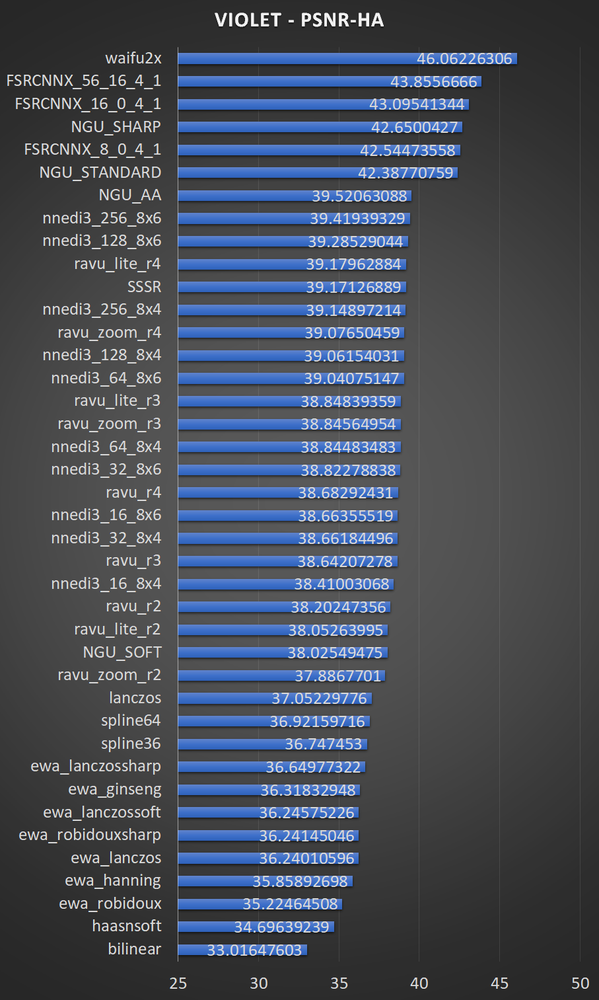

A study of performance and quality by João Vitor Chrisóstomo
Introduction
This work aims to mathematically quantify image quality and performance of different real-time upscaling algorithms.
Before attempting to reproduce, make sure to grab the latest version of mpv and updated user shaders. You can get
the shaders from bjin and igv (FSRCNNX)/igv (SSSR).
Like its name implies, upscaling is simply the act of increasing the scale of something. In the digital signal processing case,
taking discrete information in a given scale and calculating points between the existing samples.
The easiest and most classic way of doing this is through simple linear interpolation, if you want to find a value between two points you can simply draw a
line between them and linearly find any value in this line. If you wanted to find the value that's placed exactly
in the middle of those 2 discrete points, you could simply do an arithmetic mean with their values to find your
answer.
Linear interpolation can be done in a plane, through both axis, creating what we call "bilinear" interpolation. Bilinear
interpolation is the simplest interpolation algorithm, easiest to calculate and unironically the most widespread one due to the fact that it's extremely simple to implement.
But can something as simple as just drawing a line between 2 known discrete points give us good results? It depends entirely
on how the original information looked like. We can, however, increase the complexity of our upscaling algorithm increasing the amount of information it takes into consideration
to find values between the original discrete points. In this page we'll evaluate what we can do differently, how much better our results can get and how it
affects our performance.
Polynomial interpolation
A relatively simple way of taking more information into consideration is fitting a curve into more than 2 discrete points. If we connect 2 points directly and only have their values
to work with our end result is always going to be a straight line connecting both, but if we can also look at the other neighbouring elements we might be able to fit actual curves and
therefore calculate the in-between points more accuraterly. This is implemented through convolution, using a specific kernel that represents a corresponding filter.
The math behind this comes from digital signal processing, to perfectly recover the analogue counterpart of a digitised signal you need an ideal low-pass filter of gain Ts and cutoff frequency between
the Nyquist frequency and the Sampling frequency. An ideal low pass filter looks like a literal rectangle in the frequency domain, which translates into a sinc in the time domain. Multiplying signals
in the time domain is equivalent to convoluting them through time, and we usually choose to use convolutions because they're faster than calculating the Digital Fourier Transform of the signal.
With that in mind, when it comes to images we don't have a "time" axis, but rather simply x and y. Everything else works the same though, but since the "ideal" reconstruction filter would require us to
perform a convolution using an infinite sinc (means taking into consideration every single point in the image and others that don't even exist), several approximations and windows have been proposed. A window
is nothing more than a way of limiting how big the kernel is, and since the kernel itself can't be a perfect infinite sinc tweaks have to be made in order to achieve good results. The Lanczos filter is a popular
approxiation of the sinc function. The Lanczos filter is simply the sinc function windowed by the central lobe of a larger sinc function.
We can more precisely upscale something if we try to reconstruct strucutures, the most evident problem with linear or polynomial
scalers is the thickening of border areas where the interpolated result doesn't transit between values as sharply,
resulting in a blurrier image with "lost" detail in the strucutures if you're downscaling and then upscaling
it back.
Machine Learning
Machine learning comes as a powerful successor to classical methods due to the fact that you do not need to rely solely on what you can currently retrieve
from the image, but also on a set of trained parameters generated from analysing multiple images and "learning" what it should do to go from "low resolution" to "high resolution".
There are multiple different machine learning based image upscalers, we'll stick to those that are easily testable as mpv user shaders, MadVR's NGU and finally Waifu2x as our state of the art representation.
Performance measurements were done upscaling an animation video encoded into 8bit AVC from 1280x720 to 2560x1440. Utilising mpv
with a benchmarking profile, all settings from profile=gpu-hq, with Vulkan as the renderer and hardware decoding turned off. The machine used has
an Ivy Bridge i5 3470, a Polaris RX 470 and user shaders were always compute shaders when possible. The methodology consists of letting mpv play the file for 4 seconds
and then seeing at which frame it stopped.
Quality measurements were done in 2 test images, one from animation and another one from live action. Debanding was turned off to prevent loss of fine detail.
The reasoning behind this comes from the fact that the live action image has more high frequency components that are harder
to "restore". In order to measure how "good" each algorithm is, the test images were previously bicubic downscaled
to a quarter of their original resolutions (0.5x scaling factor in both axes), and then upscaled back to their
original resolutions with a direct 2x upscaling factor (2x in both axes outputs a resolution that's 4x larger in pixels).
Every single scaler was tested on a full range greyscale PNG, which can be found on the repository.
Performance was evaluated simply in frames per second, while quality was evaluated in
PSNR,
SSIM,
IW-SSIM,
PSNR-HMA and
PSNR-HA.
Testing and results
The following image was used for the animation upscaling testing:
Before we continue to the results, you can find all images in this repository.
We can see the results below:

The following image was used for the live-action upscaling testing:
We can clearly see that in general, machine learning based scalers tend to give better quality, though as expected they're also more computationally
expensive. We can see that FSRCNNX is the highest scoring mpv scaler, trading blows only with NGU.
All NGU algorithms were tested on their highest quality presets (Very High), which was fine on the RX470, but significantly heavier than FSRCNNX-8-0-4-1.
FSRCNNX-16-0-4-1's performance is also relatively okay, but the almost identical quality over its lighter variant might not be enough to justify using it.
NNEDI3 is pointless. SSSR can be a nice alternative for low scaling factors (since FSRCNNX is a doubler and therefore would need to be downscaled afterwards), and Ravu while being blurrier might be able to hide compression
artifacts or bad art in general.
If the point is getting as close as possible to the intended result, for mpv FSRCNNX is the clear choice.
If you're using MadVR, both NGU-STANDARD and NGU-SHARP look great as long as your system can handle them, and NGU-AA is a Ravu alternative.
While I'm providing numerical test results to mathematically evaluate how those different algorithms perform, I strongly advise taking a look on how the upscaled images actually end up looking like. The viewer has his/her own preference regarding
different drawbacks like aliasing, ringing or blurring. Some people might prefer an algorithm that scores relatively poorly when compared to sharper choices, but you should please yourself while consuming your media.
The following image is the result of a survey conducted by Don P. Mitchell and Arun N. Netravali, alongside 9 other digital image processing experts with the intention of classifying the bicubic filters
through the B and C parameters.
The variant known as "Mitchell-Netravali" nowadays is the filter you get with B=C=1/3, and it is mpv's "--profile=gpu-hq" default downscaler.
Likewise, Imagemagick defaults to mitchell when you're upscaling or downscaling an image with transparency (it uses lanczos when there's no alpha channel). Note that those choices are subjective, the developers did not choose Mitchell based on
mathematical measurements and you should do the same.
Fractional Luma Upscaling
Taking into consideration anime productions are still done at arbitrary resolutions between 1280x720 and 1920x1080 (with most below 1600x900) and that most users are still watching them on FHD 1920x1080 displays, the most common scenario
when there's any luma upscaling (or rgb upscaling if you want to nitpick about it, since mpv merges luma and chroma right after doubling chroma) being performed by the player is arguably 720p->1080p, which corresponds to a 1.5x scaling factor.
With the recent addition of ravu-zoom to our ever growing arsenal of user shaders, and the need to find out which dscales work better alongside the double-only prescalers, adding a new series of measurements seem reasonable.
The methodology is straightforward, Violet was downscaled to 1280x720 using --dscale=catmull_rom --correct-downscaling --linear-downscaling, and then brought back up to 1920x1080. For the doublers, the following downscale was also
performed with --correct-downscaling and --linear-downscaling. SSimDownscaler is the only exception, as igv states the shader is tuned to be used with --dscale=mitchell and --linear-downscaling=no.
As expected, the doublers perform relatively poorly alongside built-in scalers. Ravu-zoom is the best stand-alone scaler, but it gets beaten by ravu-lite and FSRCNNX when those are used with SSimDownscaler. I originally only wanted to include the
best version of each shader, but FSRCNNX_x2_8-0-4-1 will need to be included soon since the peformance disparity between FSRCNNX_x2_8-0-4-1 + SSimDownscaler and Ravu-zoom-r4 is just too high.
Chroma Upscaling
Chroma subsampling is a technique utilised to save bitrate/filesize without strongly sacrificing perceived quality, by taking into account how our eyes biologically work and how our brains interpret the information they're receiving.
With the rise of television broadcasting the recurring problem of bandwidth-heavy innovations rapidly making the electromagnetic spectrum "crowded" started to become problematic, the practical bands of low long-range attenuation
were becoming scarce and that would undoubteadly limit the amount of things we could have "over the air", which then lead the way to new bandwidth-saving techniques that aimed to reduce the required bandwidth as much as reasonably possible
without affecting the perceived quality of the service to the same extent.
Since we're more likely to perceive contrast/luminosity differences than chromatic details, chroma-subsampling is simply the most basic way of throwing away some colouring information without sacrificing on luminosity resolution.
To make this simple to understand, we can see a normal image below alongside its RGB planes:
Now, the same image alongside its YUV/YCbCr planes:
We can easily simulate how it would look like if it didn't have its entirely chromatic information available by simply downscaling the chroma planes to 1/4 of their original resolution (0.5x scaling factor) and then upscaling them back (2x scaling factor).
It's important to see how much "blurrier" the chromatic planes look after this process, in other words, how much high frequency information they lost.
Can't notice the difference when you put it back to RGB? Well, that's the point. In any case, to make it possible for us to see, you can look at the image below, which is simply 128 plus the difference between the reference and the chroma subsampled version:
From this simulation it's probably reasonable to understand why chroma upscaling isn't usually a big concern, it's just that you're unlikely to notice the difference on real content.
With that in mind, we can proceed with the actual comparison. SSIM measurements can be ignored this time since the luma plane remains intact and therefore there are almost no significant gains to be made in structural similarity from switching the scaler.
Rosetta served as a somewhat unfaithful representation of what you should expect from anime, since usually speaking actual anime footage is far from being as detailed and therefore the scalers would score even closer overall. We can proceed
with a live action example.
It's important to notice how the numerical difference between the scalers is much smaller when doing chroma measurements, and this is precisely why using a heavier scaler is usually not warranted unless the performance impact is negligible.
On my system, running KrigBilateral on Vulkan makes no difference whatsoever since I have a CPU decoding bottleneck at around ~1200 FPS with or without it on a 720p 8bit AVC file. Running on ra_d3d11 with d3d11va hardware decoding, I go from ~1800 FPS to ~1150 FPS going from
lanczos to KrigBilateral. Running both FSRCNNX-8-0-4-1 and KrigBilateral at the same time gives me ~260 FPS on both d3d11 and Vulkan, with or without hwdec.
My personal recommendation is that you should test it yourself to see if you can notice KrigBilateral's difference during playback, and use it if it doesn't really matter resource-wise (in the case your GPU is fine either way). Another sensible decision would be to
use it when you don't need luma upscaling, since then the only gains you can make are in chroma.
What about downscaling?
Well, we've been talking about upscaling up to now, but is there any difference when it comes to downscaling? Intrinsically, downscaling images should be an easier task considering all we need to do is draw the same curves
with fewer points. A normal person would find it much harder to differentiate downscalers, all reasonable filters are usually good enough and it becomes a subjective problem of avoiding the artifacts you dislike the most.
Different filters will produce different amounts of ringing, blocking and aliasing. Some prefer smooth images, others prefer sharp images... The problem here is that we can't compare the results to a reference and calculate
which filter managed to get the closest to the ground truth like we did before for upscaling.
I chose to use Catmull Rom for all my downscales up to this point, and some of you might be asking yourselves why. Well, Catmull Rom is the sharpest BC-Spline that satisfies the B + 2C = 1 recommendation by
Don P. Mitchell and Arun N. Netravali. It is sometimes used in the industry and for a good reason, on top of being reasonably sharp it does not introduce many artifacts at all and the ringing is very tame when compared to
sharper filters like Lanczos. This, however, is just my own personal preference. It's nothing more than a subjective approach to the problem. Mitchell does produce even less artifacts but the end result is noticeably blurrier.
This Stackoverflow answer from 2008 indicates some sort of survey was conducted within Hollywood and they ended up choosing windowed sincs for downscaling and Mitchell for upscaling.
Since NIQE and PIQE are pretty much the same thing, let's drop PIQE and focus on the other 2. Since humans usually like sharp images I expect BRISQUE to rank the scalers based almost solely on sharpness. NIQE should
theoretically be more objective and actually rank them in an order that goes from "less distortions" to "more distortions". Both of them rank "better" images with lower scores.
With all that in mind we can proceed to the test image. I'll be using Chitanda for downscaling, this keyframe represents anime content very well, you can see she it's not as sharp as fanart (likely because it's an upscale
from some arbitrary resolution between 1280x720 and 1920x1080) but also not overly blurry either. I decided to use --linear=downscaling=no alongside --correct-downscaling and --deband=no this time to make the comparison
against SSimDownscaler fairer, and funnily enough almost all filters seem to perform better on the test image this way.
The following image was downscaled using all the available filters in mpv:
As always, you can find all the resulting images in this repository.
We can see the results below:
As expected, BRISQUE really did almost perfectly rank them from sharpest to blurriest. NIQE put Haasnsoft on top which is an interesting result, I personally find Haasnsoft to be too blurry but that might be useful to hide
source artifacts. Mitchell shows up fairly high too, which is a good sign considering it is the --profile=gpu-hq default downscaler.
Note that as I've been trying to say, downscaling is extremely subjective and even algorithms designed to measure the same things come up with extremely different results.
Add the fact that neither of them were trained with anime content in mind and we have the 2 most useless tables in this entire page!
Out of curiosity, I decided to calculate the structural similarity between the outputs of SSimDownscaler, Lanczos and Catmull Rom.
ssim(lanczos, ssimdownscaler) gives me 0.999721340635465 and ssim(catrom, ssimdownscaler) gives me 0.999692060660229.
Those numbers are so close you'd be hard pressed to notice any differences whatsoever between the images.
Since both BRISQUE and NIQE "learn" from images considered good, We can make them more accurate by actually training them on anime content. I won't go over the trouble of training a custom BRISQUE model, that would
require me to give a subjective score to each image, but NIQE does not depend on human intervention and training it is trivial.
My original idea was using Waifu2x's training dataset, but I found out it isn't public. Then I figured out that I could simply use my anime screenshots folder (which had 162 anime screenshots inside from numerous different shows).
The resulting model does not only give all the scalers better results but it also correlates better with the BRISQUE results and my personal preferences.
This looks like a table we can trust now, SSimDownscaler is at the top as it should but the following filters aren't ranked from sharpest to blurriest. Lanczos is considerably sharper than Catmull Rom but also creates
more ringing artifacts, which likely explains why Catmull Rom is on top of it now. Mitchell and Haasnsoft are both too soft hence why those shifted to the bottom half of the table. Overall I really like the results.
I should probably repeat this for an image with more high frequency components like Rosetta, but for now Chitanda will suffice.
Changelog
28/11/2020: Improving scaling explanations considerably. Adding a new and improved downscaling section with no reference image quality metrics and a custom model fit for anime content.
26/11/2020: Changelog moved to the end of the page. Mitchell survey and some clarifications regarding downscaling added.
11/05/2019: KrigBilateral updated.
22/04/2019: FSRCNNX updated, removing the downscaling section for now since people aren't exactly going out of their ways to fix shitty upscales and there's already some information about it on the fractional tables.
21/04/2019: Preliminar fractional upscaling evaluatons added, focusing on the most relevant algorithms first.
18/04/2019: Ravu-zoom-r4 added, r2 and r3 were updated.
17/04/2019: PSNR-HA/HMA measurements are now done with wstep = 7 as recommended by igv.
16/04/2019: New FPS measurement methodology, files now play for 4 seconds and then I calculate how many frames were displayed based on which frame it stopped at after the time-frame has elapsed.
--scalers-resizes-only was also removed since the half pixel shift is not noticeable during playback. Previous results had different numbers, but the order didn't exactly significantly change.
06/04/2019: Tables updated with newer versions of FSRCNNX again.
31/03/2019: MS-SSIM tables were removed. All remaining luma related tables were updated. New methodology consists of basically utilising a full-range greyscale PNG as input (which results in lower quantisation errors
when compared to using limited range YCbCr). Ravu-zoom was added, FSRCNNX_x2_16-0-4-1 and Ravu-lite were updated.
27/03/2019: Updated PSNR-HA/HMA, you can expect to see ravu-ar and ravu-zoom soon. PSNR-HVS-M was removed since it's deprecated by the insertion of PSNR-HA.
15/03/2019: New versions of FSRCNNX.
08/03/2019: Adding another test image for chroma, and changed all chroma tests to upscale from a yuv4mpegpipe y4m file which makes me more confident they're accurate.
07/03/2019: Adding Ravu-lite and fixing NGU-AA's half pixel shift. Huge thanks for Bjin for providing a user-shader to accomplish the latter =). FPS chart should be updated soon.
03/03/2019: Ravu-chroma and Ewa_Robidoux/Ewa_Robidouxsharp added.
27/02/2019: PSNR-HMA and PSNR-HA tables added.
25/02/2019: Initial version of the Chroma section is added. I'll take some time to slowly polish it with more information and different tests, and I'm also probably going to add PSNR-HMA to the RGB tests soon.
20/02/2019: IW-SSIM tables added.
19/02/2019: MS-SSIM tables fixed, code had issues with RGB -> greyscale conversion.
18/02/2019: Lanczos added, and tables now display results from best to worst.
16/02/2019: Other EWA scalers were added.
22/12/2018: I found out a mistake in previous results, and have once again updated all quality comparison results.
I'm not certain about what was causing the problems, but turning off PNG filtering and debanding seems to have fixed it. I'll investigate which of the two was the culprit once I have the time.
Well, since I had to redo everything, I took this opportunity to improve the testing methodology, debanding was turned off to prevent loss of detail, and I used a lossless
YUV444p AVC encode as upscaling source instead of a YUV444p JPEG.
18/12/2018: Results have been updated with latest versions of FSRCNNX and Waifu2x. On top of that, I've included MS-SSIM and PSNR-HVS-M measurements.
I've also included all NGU algorithms from MadVR since people are interested in them.